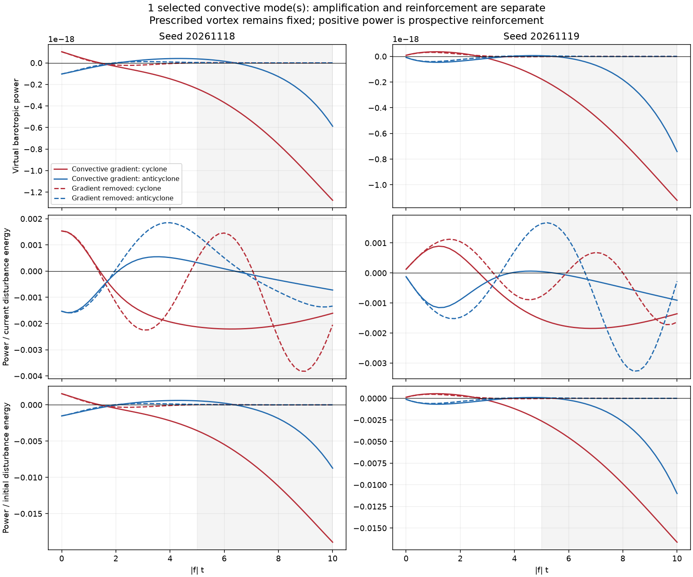
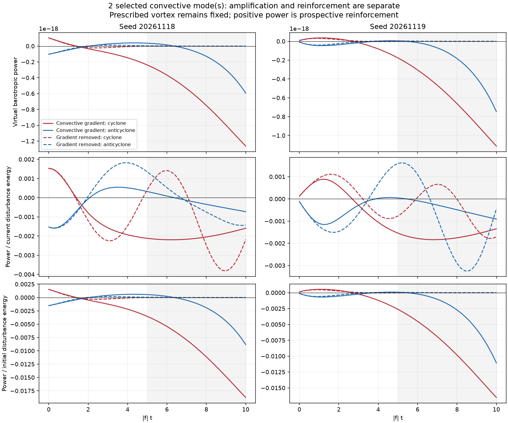
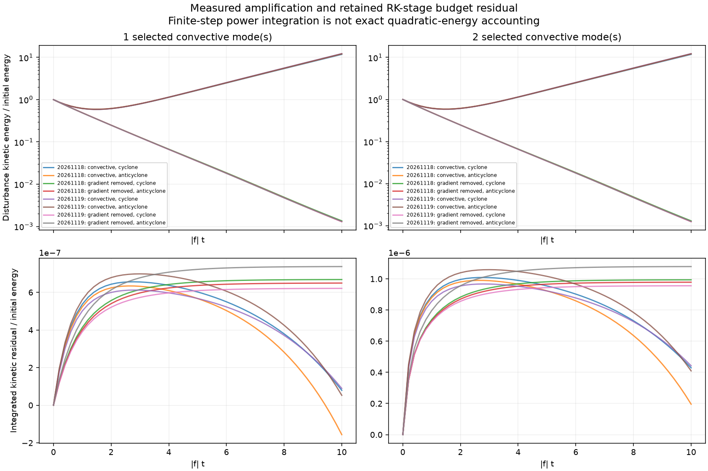

UNITY · 128² HORIZONTAL GRID · 0 ≤ |f|t ≤ 10
This convective response does not reinforce cyclones
The tested mechanism gives the opposite of the proposed cyclone-reinforcing feedback. Over the late measurement window, disturbances extract energy from both prescribed vortex signs, with greater extraction from the cyclone. This ordering holds for both initial seeds and for one or two retained vertical modes, including when power is normalized by the current disturbance energy.
All 18 cases completed on Unity. The unstable thermal profile amplifies disturbance kinetic energy by about 11.8–12.3 times; removing its unstable gradients leaves about 0.0013 of the initial energy. Growing disturbances therefore do not imply a reinforcing stress on the large vortex.
The background vortices remain fixed. The movies show the evolving disturbances, not a growing large-scale vortex. This is a linear, frozen-profile mechanism test; it does not simulate saturated convection, spontaneous LSV formation or a sustained inverse cascade.
Perturbation vorticity at three heights
Upper row: cyclone. Lower row: anticyclone. Columns: 20, 60 and 100 km above the bottom. The two-mode, convective-gradient case with seed 20261118 is shown. Colors represent ζ′/|f|; the prescribed background vorticity is omitted so that the small disturbances remain visible. These are actual truncated-model fields reconstructed from their vertical basis at the stated heights, not independent grid levels from Breeze.
One symmetric asinh color scale spans both vortices, all heights and the entire movie. No framewise rescaling or clipping.
Buoyancy perturbation at the same heights
Same cases, times and layout. Colors show actual buoyancy perturbation b′ in m s⁻². This is not passive-tracer concentration. No passive tracer is evolved in these tests. Modes can concentrate below the displayed heights; weak signals aloft retain the same fixed scale.
One symmetric asinh scale spans the full buoyancy range across both cases, all heights and all times.
Measured response
Positive stress work means the disturbances would supply energy to the prescribed vortex; negative work means they extract energy from it. Disturbance growth and vortex reinforcement are separate measurements. The figures show actual power, power per current disturbance energy and power per initial disturbance energy.
| Seed | Cyclone | Anticyclone |
|---|---|---|
| 20261118 | −0.010070 | −0.002072 |
| 20261119 | −0.008763 | −0.002941 |
Both signs lose prospective energy in every heated pair. The cyclone-minus-anticyclone contrasts agree to about 1–2% between the retained one- and two-mode models. Reflected-f checks agree to about 1.4 × 10⁻¹⁴, and the largest retained kinetic-energy accounting residual is about 1.1 × 10⁻⁶ K₀. These checks support the measured ordering within this model; they do not establish general vertical or statistical convergence.
This is a negative result for this specific finite-window mechanism test. It does not rule out nonlinear convection-driven LSV formation in Breeze. The background vortex and thermal profile remain fixed, disturbance interactions are linearized, and the Boussinesq reduction omits the original atmosphere’s density variation.
All 18 cases are complete; the numerical analysis and both movies were verified on Unity.
Late-window comparison, 5 ≤ |f|t ≤ 10. Each entry is mean prospective power divided by initial disturbance energy K₀, in units of |f|. The negative cyclone-minus-anticyclone differences show greater prospective energy extraction from the cyclone; subtracting the gradient-removed control preserves that sign.
| Modes | Seed | Convective gradient cyclone − anticyclone | Gradient removed cyclone − anticyclone | Difference between thermal backgrounds |
|---|
Numerical accounting tolerance is not sampling uncertainty. Two seeds and one horizontal resolution do not establish statistical or spatial convergence.



Power integrals use actual Runge–Kutta stage values. Their finite-step quadratic-energy residual is retained and displayed; it is not assumed to vanish. Buoyancy variance is tracked separately from kinetic energy.
Controls and model assumptions
Sixteen primary cases combine one or two complete vertical modes, two vortex signs, two thermal backgrounds and two matched random seeds. Primary cases share the same physical disturbance for each seed, at RMS amplitude 10⁻⁶ of the background flow. Two additional cases reflect both f and the disturbance to check symmetry. There is no continuing random stirring.
The finite-f, nonhydrostatic Boussinesq model uses ordinary viscosity and thermal diffusion. Its horizontal box is periodic, 16 selected convective wavelengths wide; the compensated Gaussian vortex has radius two wavelengths and peak |ζ/f| = 0.25. Both prescribed signs pass the centrifugal-stability screen. A complete vertical mode can require several horizontal shape functions to retain its Coriolis coupling.
The convective background uses the measured day-100 mean stratification of the earlier heated f-plane run, including its stable cap. The gradient-removed control replaces negative N² by zero and retains positive stratification. It is not instantaneous bottom-heating switch-off. The Boussinesq reduction also omits the source atmosphere’s nearly tenfold density variation, vertical-velocity sponge and global enthalpy controller.
The interval |f|t = 0–10 corresponds to approximately 9.64 hours at Jupiter’s 55°N value of f. This bounded campaign runs on one Unity CPU, with a 30 CPU-minute projected-cost release gate and a 45-minute production allocation. It is designed to screen a mechanism before a longer nonlinear experiment.
Data, equations and validation
Completed analysis report All derived scalar histories (.csv.gz) Experiment protocol Equation derivation Independent response checks Vertical-mode checks Source code